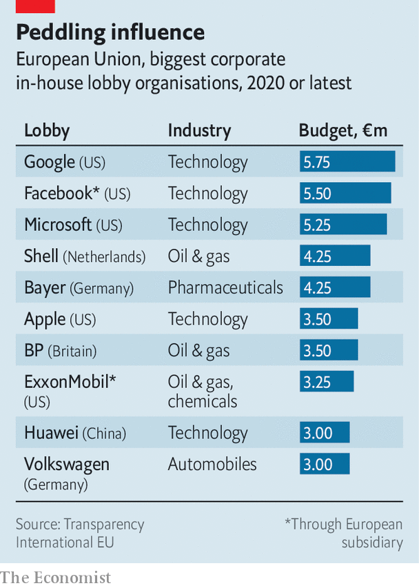
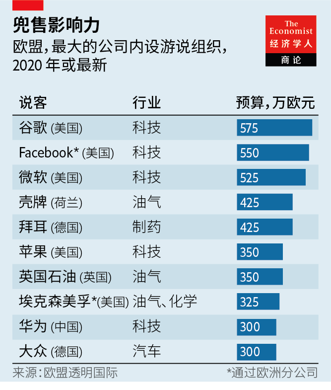

2021-05-25T13:15:58+00:00
Swamp in the heart of Europe
欧洲心脏地带的沼泽
歐洲心臟地帶的沼澤
The power of lobbyists is growing in Brussels and Berlin
布鲁塞尔和柏林的说客势力日增
布魯塞爾和柏林的說客勢力日增
Europe’s politics are getting more swampy
欧洲政治变得越来越沼泽化
歐洲政治變得越來越沼澤化
EUROPEANS HAVE long assumed that excessive lobbying is only an American problem. But over the past 15 years Brussels has become the world’s second capital of the dark arts after Washington, DC, with Berlin not far behind. Both cities have become infested with new arrivals who are pushier and use more sophisticated techniques than old-fashioned associations such as the Federation of German Industry or BusinessEurope. Weak rules in both places are not designed to cope with the explosion of activity.
长期以来，欧洲一直认为过度游说的问题是美国独有的。但在过去的15年中，布鲁塞尔已成为仅次于华盛顿特区的世界第二大黑魔法之都，柏林紧随其后。这两座城市已经充斥着新来者——比起像德国工业联合会或欧洲商业协会这样的老式协会，他们更能死缠烂打，手段也更老道。这两个地方薄弱的规则都无法应对游说活动的激增。
長期以來，歐洲一直認為過度遊說的問題是美國獨有的。但在過去的15年中，布魯塞爾已成為僅次於華盛頓特區的世界第二大黑魔法之都，柏林緊隨其後。這兩座城市已經充斥着新來者——比起像德國工業聯合會或歐洲商業協會這樣的老式協會，他們更能死纏爛打，手段也更老道。這兩個地方薄弱的規則都無法應對遊說活動的激增。
As international public-relations firms have moved in, big companies have also beefed up their in-house lobbying activities (see chart). Google and Facebook have opened offices in the government district of Berlin, near the Bundestag, Germany’s parliament, and in the Quartier Léopold of Brussels, close to the European Commission, the executive body of the European Union.
随着国际公关公司的介入，大公司也加强了自有的游说活动（见图）。谷歌和Facebook在柏林政府区的德国国会大厦附近，以及布鲁塞尔的利奥波德区靠近欧盟委员会（欧盟执行机构）的地方开设了办事处。
隨着國際公關公司的介入，大公司也加強了自有的遊說活動（見圖）。谷歌和Facebook在柏林政府區的德國國會大廈附近，以及布魯塞爾的利奧波德區靠近歐盟委員會（歐盟執行機構）的地方開設了辦事處。
That adds up to plenty of lobbyists’ boots on the ground, according to Transparency International (TI), a watchdog. In Brussels 25,000 lobbyists with a combined annual budget conservatively estimated at more than €3bn ($3.6bn) seek to influence EU policy. Approximately 7,500 of them are accredited with the European Parliament, which means they are regularly able to meet with parliamentarians. Berlin is now reckoned to host up to 7,000 lobbyists with over €1bn to throw around every year.
根据监察组织透明国际（TI）的说法，这加起来就带来了很多说客。在布鲁塞尔，有2.5万名说客试图影响欧盟的政策，保守估计其年度预算合计超过30亿欧元（36亿美元）。其中约有7500人获得了欧洲议会的认可，意味着他们能够定期与议员会晤。据估计，柏林现在每年要接待多达7000名说客，他们有超过10亿欧元可供调遣。
根據監察組織透明國際（TI）的說法，這加起來就帶來了很多說客。在布魯塞爾，有2.5萬名說客試圖影響歐盟的政策，保守估計其年度預算合計超過30億歐元（36億美元）。其中約有7500人獲得了歐洲議會的認可，意味着他們能夠定期與議員會晤。據估計，柏林現在每年要接待多達7000名說客，他們有超過10億歐元可供調遣。
This does not necessarily translate into political clout. “Deep pockets do not equal effective lobbying,” says Nick Aiossa of TI. Some companies throw money at in-house lobbyists, consultancies and marketing campaigns without much result. But good lobbyists try to be part of the debate they wish to sway as early as possible, so they can try to shape the agenda. As power at the EU is diffuse and decisions are the result of deals at the commission, the council (made up of the 27 heads of government) and the parliament, good lobbyists who can navigate the decision cycle of these three institutions can be invaluable.
这并不一定会转化为政治影响力。TI的尼克·阿伊奥萨（Nick Aiossa）说：“财大气粗并不等于有效的游说。”一些公司在内部说客、咨询公司和市场营销活动上一掷千金，但收效不大。但是优秀的说客会尽早参与他们希望左右的那些辩论，以便设法塑造议程。由于欧盟的权力是分散的，而决策是由委员会、理事会（由27个政府首脑组成）和议会达成的各种协议的结果，因此能够游刃有余地在这三个机构的决策周期中进行游说的优秀说客可谓是无价之宝。
這並不一定會轉化為政治影響力。TI的尼克·阿伊奧薩（Nick Aiossa）說：“財大氣粗並不等於有效的遊說。”一些公司在內部說客、諮詢公司和市場營銷活動上一擲千金，但收效不大。但是優秀的說客會儘早參與他們希望左右的那些辯論，以便設法塑造議程。由於歐盟的權力是分散的，而決策是由委員會、理事會（由27個政府首腦組成）和議會達成的各種協議的結果，因此能夠遊刃有餘地在這三個機構的決策周期中進行遊說的優秀說客可謂是無價之寶。
Though the effectiveness of lobbyists is still debatable, a series of scandals in Brussels and Berlin convinced policymakers to strengthen rules. In 2011 journalists from Britain’s Sunday Times posing as lobbyists secretly filmed four members of the European Parliament (MEPS) negotiating a deal to propose amendments to legislation in exchange for €100,000 a year. The EU subsequently introduced a register for lobbyists, but it is voluntary. And since 2015 EU commissioners and their cabinet are required to make public their meetings with registered lobbyists, as are senior members of the parliament. That leaves half of 705 MEPs who do not reveal their dealings with lobbyists.
尽管说客的效力尚不能定论，但布鲁塞尔和柏林爆出的一系列丑闻让政策制定者确信要强化规则了。2011年，英国《星期日泰晤士报》的记者假扮说客，秘密拍摄了欧洲议会的四名议员（MEP）谈判一笔交易，用提出法律修正案换取每年10万欧元。欧盟随后设立了说客登记册，但这是自愿的。自2015年以来，和议会高级成员一样，欧盟委员及其内阁也被要求公开与已注册说客的会谈。目前，705名欧洲议会议员中尚有一半没有透露与说客的往来。
儘管說客的效力尚不能定論，但布魯塞爾和柏林爆出的一系列醜聞讓政策制定者確信要強化規則了。2011年，英國《星期日泰晤士報》的記者假扮說客，秘密拍攝了歐洲議會的四名議員（MEP）談判一筆交易，用提出法律修正案換取每年10萬歐元。歐盟隨後設立了說客登記冊，但這是自願的。自2015年以來，和議會高級成員一樣，歐盟委員及其內閣也被要求公開與已註冊說客的會談。目前，705名歐洲議會議員中尚有一半沒有透露與說客的往來。
Germany remained a regulation laggard compared with other European countries until last year, when Der Spiegel, a weekly newspaper, revealed that Philipp Amthor, the youngest MP in the Bundestag and a rising star of Angela Merkel’s Christian Democratic Union, was on the board of Augustus Intelligence, an American startup, and lobbied vigorously for the company at the ministry of economics. Mr Amthor initially denied receiving any compensation from the firm, but subsequently admitted getting share options that he did not disclose. The resulting furore reignited the debate about lobbying regulation.
德国的游说监管一直落后于其他欧洲国家，事情在去年发生了变化。德国《明镜周刊》揭露德国联邦议院最年轻的议员、默克尔的基督教民主联盟的后起之秀菲利普·安托（Philipp Amthor）担任美国创业公司奥古斯都情报（Augustus Intelligence）的董事会成员，并在经济部积极为该公司游说。安托起初矢口否认从该公司获得任何报酬，但随后承认获得了他先前未披露的期权。由此产生的公愤重新点燃了有关游说监管的辩论。
德國的遊說監管一直落後於其他歐洲國家，事情在去年發生了變化。德國《明鏡周刊》揭露德國聯邦議院最年輕的議員、默克爾的基督教民主聯盟的後起之秀菲利普·安托（Philipp Amthor）擔任美國創業公司奧古斯都情報（Augustus Intelligence）的董事會成員，並在經濟部積極為該公司遊說。安托起初矢口否認從該公司獲得任何報酬，但隨後承認獲得了他先前未披露的期權。由此產生的公憤重新點燃了有關遊說監管的辯論。
A law passed in March will require members of the Bundestag to declare regular lobbying work. After further recent scandals involving MPs pocketing substantial commissions from companies making face masks, or receiving money from lobbyists for Azerbaijan in return for voting in favour of pro-Azerbaijani motions, the government has also drafted a bill with stricter ethics rules for parliamentarians that is winding its way through the Bundestag. The bill bans MPs from any lobbying work, accepting cash donations or making paid speeches.
今年3月通过的一项法律将要求德国联邦议院议员申报日常的游说工作。在最近爆出的更多丑闻中，国会议员从口罩生产商处收受大笔佣金，或收受亲阿塞拜疆说客的钱财而投票赞成有利于阿塞拜疆的动议。政府于是又起草了一项如今正在联邦议院讨论的法案，为议员设立更严格的道德准则，禁止国会议员进行任何游说工作、接受现金捐赠或发表有偿演讲。
今年3月通過的一項法律將要求德國聯邦議院議員申報日常的遊說工作。在最近爆出的更多醜聞中，國會議員從口罩生產商處收受大筆傭金，或收受親阿塞拜疆說客的錢財而投票贊成有利於阿塞拜疆的動議。政府於是又起草了一項如今正在聯邦議院討論的法案，為議員設立更嚴格的道德準則，禁止國會議員進行任何遊說工作、接受現金捐贈或發表有償演講。
These are steps in the right direction but it is not enough. “The next scandal is just waiting to happen,” says Hans-Martin Tillack, author of “Die Lobby Republik”, a book sounding the alarm about the growth of corporate lobbying in Germany. “The payments are the problem,” he says. Corporate donations to political parties remain untouched by the new legislation. Fabio De Masi, a parliamentarian for the Left party, argues for a complete ban on corporate donations to political parties and an upper limit for party donations from private individuals. Timo Lange of LobbyControl, a watchdog in Berlin, also notes that lobbyists will not have to report meetings with members of the government who are not also MPs.
这些步骤朝向正确的方向，但并不足够。“下一场丑闻早晚要发生。”汉斯-马丁·提拉克（Hans-Martin Tillack）说。他撰写的《游说共和国》（Die Lobby Republik）一书对公司游说活动在德国的增长拉响了警报。“问题在于付款。”他说。新法规并未涉及公司对政党的捐款。左派议员法比奥·德·马西（Fabio De Masi）主张完全禁止公司向政党捐款，个人捐款也要设立上限。柏林监察机构LobbyControl的蒂莫·兰格（Timo Lange）也指出，说客将不必报告与非国会议员的政府成员的会面。
這些步驟朝向正確的方向，但並不足夠。“下一場醜聞早晚要發生。”漢斯-馬丁·提拉克（Hans-Martin Tillack）說。他撰寫的《遊說共和國》（Die Lobby Republik）一書對公司遊說活動在德國的增長拉響了警報。“問題在於付款。”他說。新法規並未涉及公司對政黨的捐款。左派議員法比奧·德·馬西（Fabio De Masi）主張完全禁止公司向政黨捐款，個人捐款也要設立上限。柏林監察機構LobbyControl的蒂莫·蘭格（Timo Lange）也指出，說客將不必報告與非國會議員的政府成員的會面。
The EU should consider tightening its rules further, says Mr Aiossa. Policymakers in Brussels will play a bigger role than ever in European business when they come to disburse billions of euros in pandemic-recovery funds. Suggestions include requiring policymakers to meet only registered lobbyists, for example, and listing those meetings on a centralised platform rather than, as now, on 88 different websites. An independent ethics body should be set up to monitor potential conflicts of interests and the “revolving door” of EU officials who join the private sector.
阿伊奥萨说，欧盟应该考虑进一步收紧其规则。布鲁塞尔的决策者们负责分配数十亿欧元的疫情恢复资金，他们将在欧洲事务中发挥比以往更大的作用。相关建议包括要求决策者仅会见已注册说客，并在一个集中平台上公示，而不是像现在那样列在88个不同的网站上。应该建立一个独立的道德机构来监督潜在的利益冲突，以及欧盟官员加入私人部门的“旋转门”。
阿伊奧薩說，歐盟應該考慮進一步收緊其規則。布魯塞爾的決策者們負責分配數十億歐元的疫情恢復資金，他們將在歐洲事務中發揮比以往更大的作用。相關建議包括要求決策者僅會見已註冊說客，並在一個集中平台上公示，而不是像現在那樣列在88個不同的網站上。應該建立一個獨立的道德機構來監督潛在的利益衝突，以及歐盟官員加入私人部門的“旋轉門”。
Lobbyists making more of a mark in Europe’s capitals is not necessarily the route to a swamp. Most lobbying is a legitimate, even necessary, part of the democratic process of balancing competing interests in policymaking. But more transparency will do wonders to the reputation of a profession that is often in the mire. ■
说客在欧洲各国首都的足迹大增，并不意味着这就会通往“沼泽”。在制定政策时平衡各种相互竞争的利益的民主过程中，大多数游说是合法乃至必要的一部分。但是，更高的透明度对这个声誉经常陷入泥潭的职业大有好处。
說客在歐洲各國首都的足跡大增，並不意味着這就會通往“沼澤”。在制定政策時平衡各種相互競爭的利益的民主過程中，大多數遊說是合法乃至必要的一部分。但是，更高的透明度對這個聲譽經常陷入泥潭的職業大有好處。